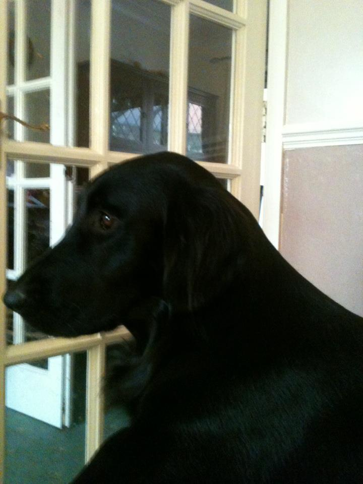
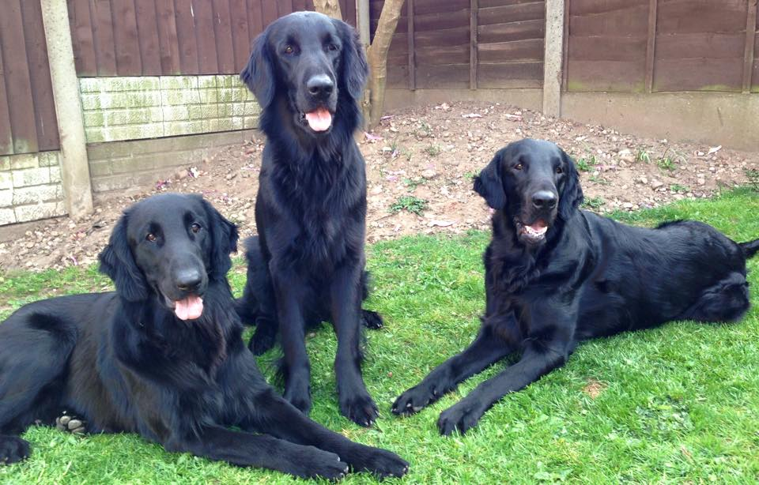
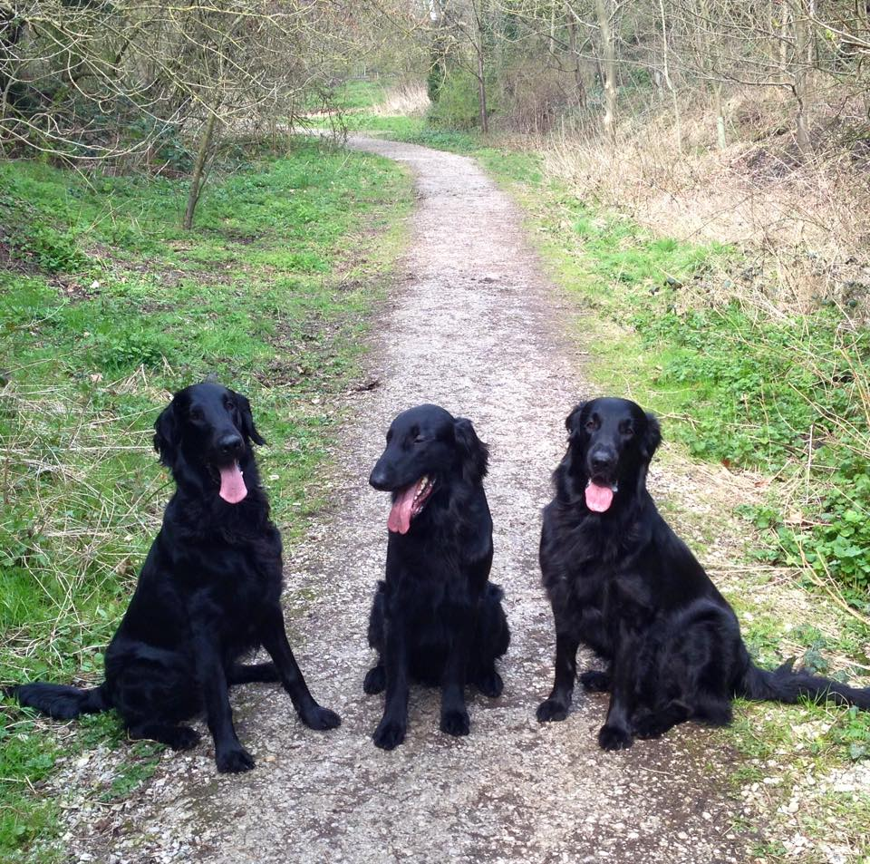
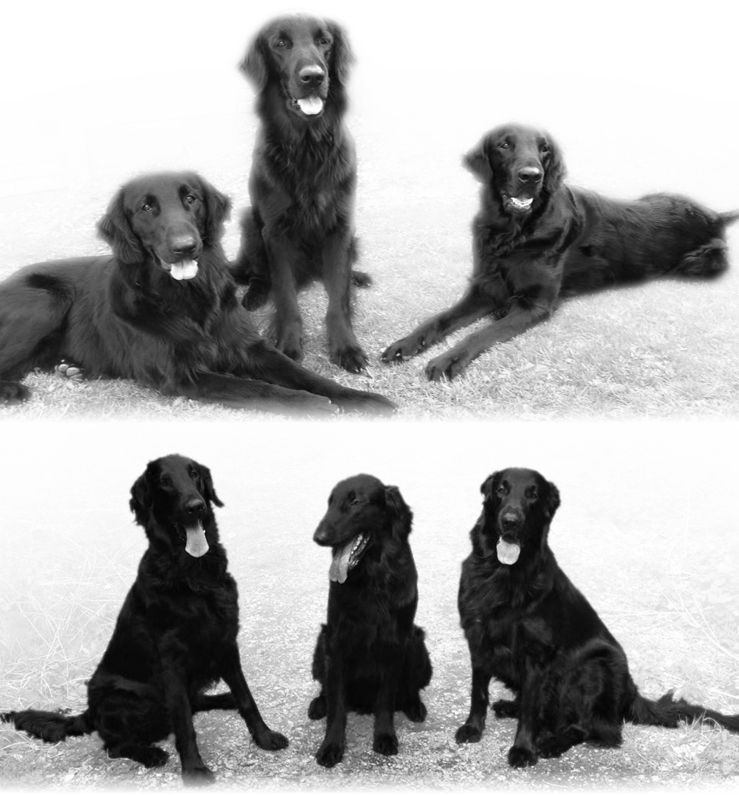

Report
Work I am proud of
- Getting a fully designed website
- Learning and using Gimp and Inkscape succesfully
- How the website looks, I think it has a great design and look to it.
- Designing and creating my logo.
- Effects I have added to images using gimp. These effects include removing unwanted items, like bottle caps, removing backgrounds, adding transparency to backgrounds etc. Images below should show this.
Searches I have done
- Finding a framework for the website. There are multiple different frameworks out there and deciding on the right for the job is a difficult task. In the end I decided on using Gumby.
- Finding a library for a gallery. This took the longest out of all the searches as many libraries failed to work with the restrictions placed on the website from the server.
- One search I had to perform multple times was how to position things inside of CSS. Since there are so many different ways to position something, I had to find the correct way for that particalar element.
Things I have discovered
- How much easier frameworks make your life.
- Positioning elements in html is time consuming (especially if you're a bt of a perfectionist)
- How difficult errors become to solve (unlike programming languages). Many problems lie within how each browser is unique in someway or within library code.
Things that took a long time
- Using any libraries off the internet took the longest time since they constantly threw errors when I tried to implement them, in the online validator, in chrome's dev tools and on the server. Repeatedly trying to fix the issues were time-consuming. Libraries or frameworks I attempted to use/used included Gumby, slick (photo gallary), jssor.
- Researching ways to do things and finding the correct way for what I want. What I found is that there is too much information online about web technologies, which makes sorting through it to find the piece I need lots of effort.
- Working out a design for the website. Creating a rough design on paper took much longer than I thought it would.
Features
- Inserting HTML code into other HTML files rather than having repeated code. For example the navbar is in a file called navbar.html and it is include in all other html files using javascript.
- Modal boxes for enlarging images in the gallery for each of the dogs.
- Parallax between the background and any scrollable content.
- Form for contacting the owner of the web page (for which the submit button isn't completed, waiting on server side instructions).
Tools and techniques
- Gumby was used as the website's framework.
- Slick was a library I used for the gallery slider under each dog.
- Inkscape was used in the creation of the logo.
- Gumpy was used in almost all of the images on the page to scale the images, create thumbnails, compress the image file sizes and finally to add effects.
Images
-

 Creation steps of the Logo; Outline created using inkscape
Creation steps of the Logo; Outline created using inkscape
-



Creation steps of background